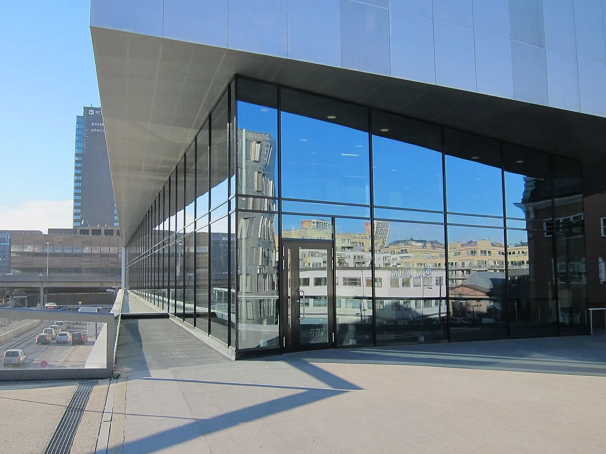
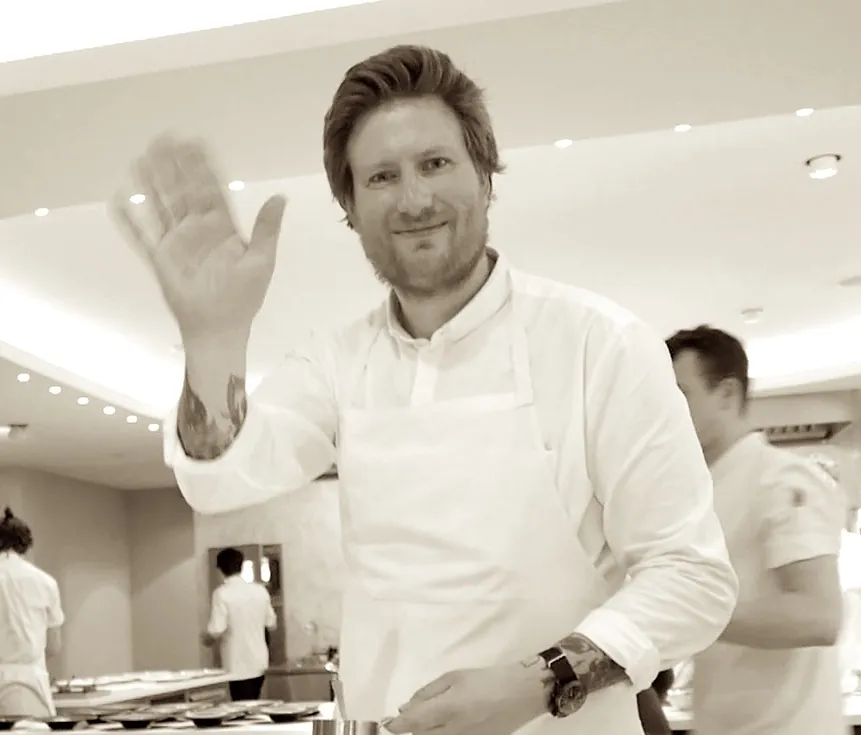

— Service Premier —
MAAEMO
Bjørvika, by the Opera House
★ ★ ★ ☘ Green Star
— three stars held since 2022 [1]

— the room, Dronning Eufemias gate 23 —

-
I.
-
II.Le FormatSet tasting, 20+ courses[9] No à la carte. The menu is the evening — allow three to four hours.
-
III.Le Couvert · Price-per-CoverNOK 4 500 ≈ USD 450 per guest[9] Wine pairings included only at certain tiers — confirm at booking.
-
IV.
-
V.Les HeuresTuesday – Saturday, 18:00 – 24:00 [18] Dinner only. Closed Sunday and Monday.
-
VI.
-
VII.HistoriqueOpened Dec 2010; first Nordic restaurant ever to win 2 stars on debut (Mar 2012); 3rd star Feb 2016; closed Grønland original 2019; relocated Bjørvika 2021; reclaimed all three Sep 2021[3].